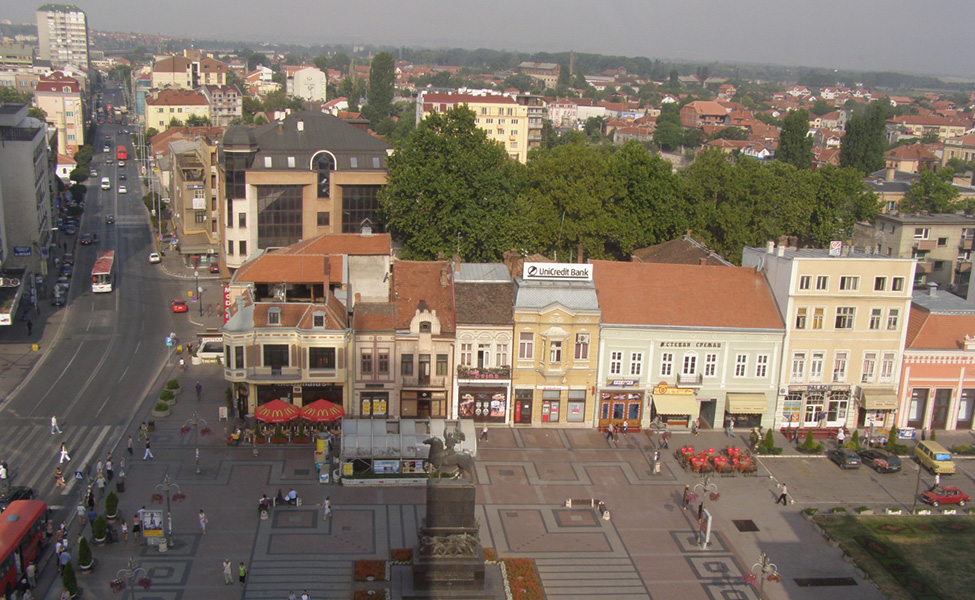
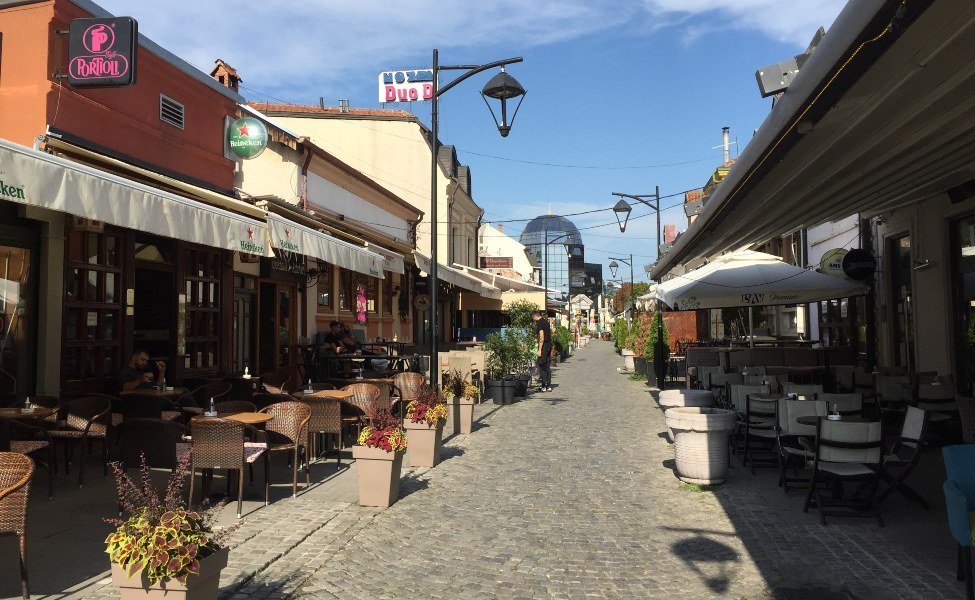
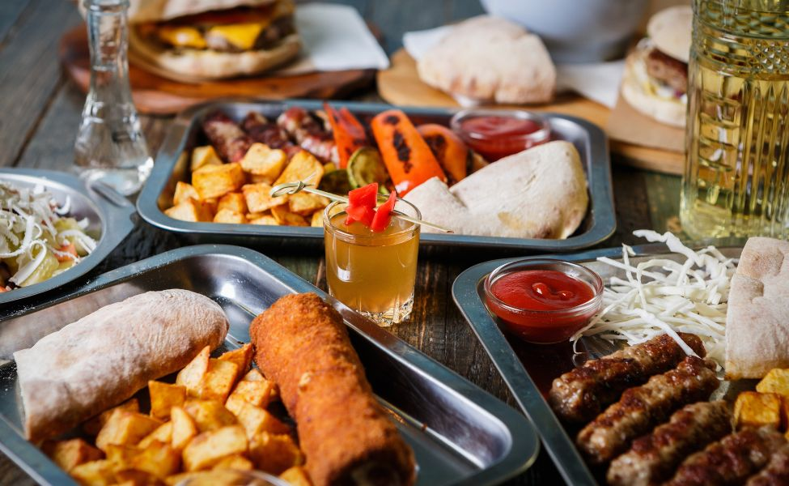
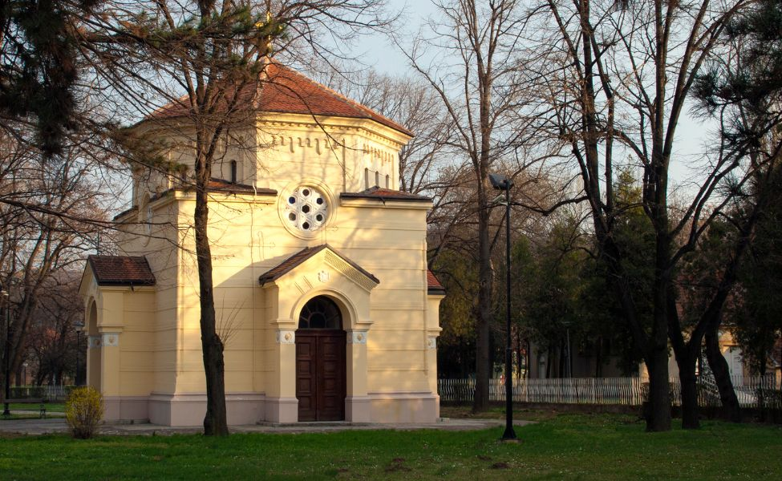
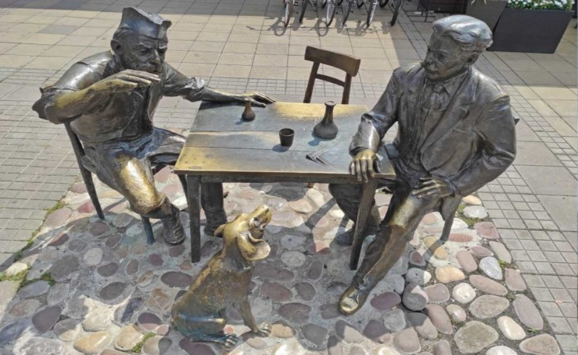
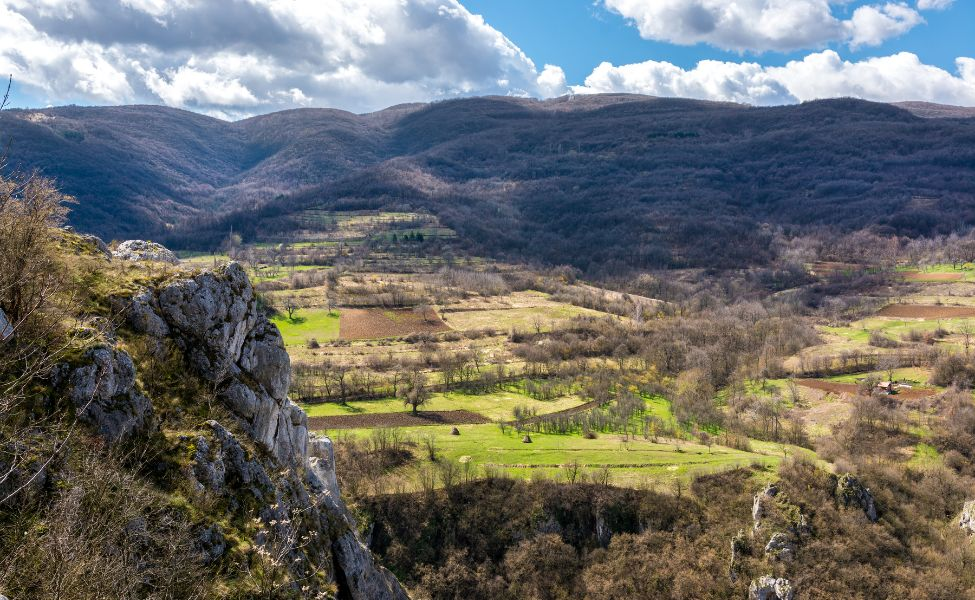

Садржај


Како до Ниша?
Како до Ниша?

Како пронаћи смештај у Нишу?
Како пронаћи смештај у Нишу?

Дегустација нишке кухиње
Дегустација нишке кухиње

Топ знаменитости Ниша
Топ знаменитости Ниша

Најбоље место за фотографисање у Нишу
Најбоље место за фотографисање у Нишу

Посета околини Ниша